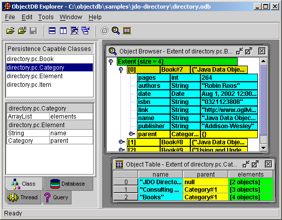

|
ObjectDB for Java/JDO - Developer's Guide Chapter 9 - ObjectDB ExplorerObjectDB Explorer is a visual tool for managing ObjectDB databases. You can use the Explorer to browse databases, execute JDOQL queries, create new databases and edit the content of existing databases.

This chapter contains the following sections: 9.1 Running the ExplorerThe Explorer is a pure Java GUI application. It is shipped as an executable jar that will run on any system with a Java 1.3 JRE or later installed. A Windows EXE (explorer.exe) and a Unix shell script (explorer.sh) for starting the Explorer on those respective operating systems are also provided. Running the Executable JAR directlyThe Explorer is packaged in the main ObjectDB development jar file (odbfe.jar / odbee.jar / odbse.jar), located in ObjectDB's lib directory. Because this file is an executable jar, on most systems, you can double click on it to start the Explorer. You can also start the Explorer from the command line. For instance, if the installation path of the ObjectDB Free Edition on Windows is c:\objectdb, you can start the Explorer using the following command: > java -jar c:\objectdb\lib\odbfe.jar If a database path is specified, the database is opened automatically when the Explorer starts: > java -jar c:\objectdb\lib\odbfe.jar my.odb Some JVM arguments can be useful. For instance, by default Java does not use more than 64MB of memory. If you need to run the Explorer with increased available memory, you can use the -Xmx JVM argument: > java -Xmx256m -jar c:\objectdb\lib\odbfe.jar Similar commands (but with different paths) can run the Explorer on other operating systems.
Starting the Explorer on WindowsYou can start the Explorer on Windows using the explorer.exe application, located in the bin directory. Notice that the original structure of the ObjectDB installation directory must be preserved. Otherwise, the required executable jar would not be found by explorer.exe. By default, running explorer.exe is equivalent to the following command: > java -Xms16m -Xmx512m -jar odbfe.jar In addition, any JVM argument can be specified as an argument to explorer.exe during startup. For instance: > explorer.exe -Xmx256m my.odb Explicitly specified arguments override the default. Therefore, the above command is equivalent to: > java -Xms16m -Xmx256m -jar odbfe.jar my.odb Starting the Explorer on UnixYou can start the Explorer on Unix using a shell script. A sample script, explorer.sh, is located in the bin/sh directory. Before using explorer.sh, you have to edit the paths that it contains. The following procedure is recommended, copy the file to the bin subdirectory, edit the copy and use it to start Explorer. In this way, the edited script will not be deleted when extracting files of a newer ObjectDB version to the same installation directory. 9.2 Browsing the DatabaseThe ability to explore database objects visually, navigate among them and execute queries is very valuable during development and debugging. Therefore, these are the most commonly used features of the Explorer. Opening a Local DatabaseTo open a local database file, use the "File | Open Local" menu command (or the equivalent toolbar button) and in the Open dialog box select the desired local database file and click the "Open" button. Recently used local database files can also be opened using the "File | Recent Local Files" menu command. By default, when the Explorer starts its opens the last used local database file automatically. You can change this behavior in "Tools | Options | General". Opening a Remote DatabaseTo open a connection to a remote database using client-server mode (supported only by ObjectDB Server Edition) use the "File | Open Remote" menu command (or the equivalent toolbar button). In the Open dialog you have to fill in the host, port, username and password of the remote connection. You also have to specify a path of the database file on the remote server, possibly using the "Browse" button that opens the "Remote File Selection" dialog box. Closing the DatabaseUse the "File | Close" menu command to close a local database file or a connection to a remote database file. The Tabbed WindowsFour tabbed windows are displayed on the left side of the Explorer desktop when a database is open. The "Class" window shows all the persistent classes in the database. You can select a class from the list of classes at the top of this window and see all its persistent fields at the bottom. The "Database" window is also split into two sub windows. The top sub window displays general information about the database and the bottom sub window displays a list of root objects that the database contains (root objects are discussed in chapter 6). The "Query" window enables a user to execute JDOQL queries in the Explorer, as discussed below. Finally, the "Thread" window, unlike the other three tabbed windows, is displayed even when no database is open in the Explorer, because it is not related to a specific database. Section 9.4 explains how to work with threads in the Explorer . Using Viewer WindowsThe Explorer provides two types of viewer windows for exploring the contents of database objects. The Table window displays a collection of objects following the approach of traditional visual database tools. Every row in the table represents a single object, every column represents a persistent field, and the content of a cell is the value of a single field in a single database object. This type of viewer is useful for viewing the data of a simple object model. In most cases, however, the Browser window (which is designed to handle more complex object models) is preferred. The browser window displays objects using a tree. Every database object is represented by a tree node, and the values of its persistent fields are represents by child nodes. The main advantage of using the browser window is in navigation among objects. Because every reference between two database objects is represented by a parent-child relationship in the tree, you can navigate among objects by expanding nodes in the tree, similar to exploring objects in a visual debugger. Notice that the same database object might be accessed using different paths in the tree and may therefore be represented by more than one node. To help identify circles in the graph of objects, a special {R} sign (indicating recursive) is displayed for an object that is already shown in a higher level of the same tree path (i.e. the object is identified as a descendant of itself in the tree). To open a new viewer window, first select a target element:
When the target element is selected, you can open a new viewer window using the "Window | Open Table Window" or the "Window | Open Browser Window" menu commands, or by the equivalent context menu commands (right clicking the selected target element) or the equivalent toolbar buttons. When the target element is an object in an open viewer window, the "Window | Open Focus Selection" command switches the current viewer to focus on the selected object. A double click on the target element opens the browser window by default (you can change the default to a table window in "Tools | Options | General | Display"). Additional information about working with viewer windows is provided in later sections. Section 9.3 explains how to use viewer windows to edit and modify the content of a database. Section 9.5 explains how to define views and set other options that affect viewer windows. Executing JDOQL queriesThe "Query" tabbed window on the left side of the Explorer desktop enables execution of JDOQL queries. The first step in defining a query is selecting a candidate class. All the instances of the selected class and its subclasses are included in the candidate collection of the query. Optional JDOQL components, such as filter, parameters, variables, ordering and imports (chapter 7 explains all these components), can also be specified in the query form. The "Reset" button clears the content of all the fields. To execute a query click the "Execute" button. If the query is valid, the default viewer (the browser window by default) is opened with the query results and the size of the result collection and the query execution time are displayed on the query form. If the query compilation fails, an error is displayed on the query form and no viewer window is opened. You can also execute a query using the "Window | Open Table Window" or the "Window | Open Browser Window" menu commands (or using the equivalent toolbar buttons). This opens the specified viewer window type and displays the results. On the bottom of the query window there are two assistant tab windows. The first tab window implements auto completion support for query definition. You can select elements from the auto completion list when you write the query filter and also when you fill the ordering field in the query form. The second tab window is filled at the moment of query execution with Java code that implements the query. You can use that code to export JDOQL queries that you test in the Explorer into your Java code. Refreshing the CacheWhen a database is open in the Explorer using client server mode, it can be accessed simultaneously by other applications. If the database is modified by another process the viewer windows in the Explorer might display content from the cache that does not reflect the real content in the database. In this case you can refresh the cache and the viewer windows using the "File | Refresh Data" menu command. 9.3 Editing the DatabaseThe Explorer is usually used as a viewer of database files, but it can also function as an editor. Therefore, you can create new database files and edit exiting database files using the Explorer. Creating a new DatabaseThe main purpose of the "Open Local Database" dialog box (displayed by "File | Open Local") is to select existing database files, but it can also serve as a basic file manager. Using the toolbar and the context menus of this dialog box (right click the directory tree and the file list to open the context menus), you can copy, cut, paste, delete and rename directories and files. You can also use this dialog to create new directories and database files. Similarly, in the server edition you can manage a remote server file system using "File | Open Remote | Browse". Class ManagementThe "Class" tabbed window on the left side of the Explorer desktop lists all the persistent classes in the database. For a new, empty database this window is empty. A new persistent class is automatically added to the database when its first instance is stored by the application in the database. To add persistent classes to the database using the Explorer, first create and compile the classes externally in your IDE, and then use the "File | Load New Classes" menu command (or the equivalent context menu command). Notice that JDO metadata for the class (as discussed in chapter 4) must be available, otherwise the load operation will fail. A change to the class schema (for instance, a new persistent field added in the IDE) is applied to the database automatically when the application stores an object with the new schema in the database. To see the change in the Explorer earlier, reload the class using the same "File | Load New Classes" command. You can also delete or rename a selected persistent class using the "Edit | Delete" and the "Edit | Rename" menu commands, respectively, or using the equivalent context menu commands. A deleted class is not shown in the list of classes anymore (unless it is loaded again), but if it still has instances in the database these objects are not affected. Renaming a class is useful as a complementary operation to renaming the class in the IDE, to avoid losing old persistent instances of the class. Similarly, renaming a selected persistent field in the Explorer is useful in order to avoid losing values of that field if the field has been renamed in the IDE. Object ManagementTo construct new persistent objects and store them in the database, open the "Construct New Persistent Objects" dialog box using one of the following methods:
In the dialog box you have to specify the number of objects to construct and their type. Additional information is required for specific types. For instance, most system types require specifying an initial value and arrays require specifying an array length. Click the "OK" button to construct the new persistent objects. You can also use the Explorer to edit the content of database objects. To edit a persistent field you have to first select it in a viewer window (browser or table). You can start editing a value field by double clicking it, by pressing F2, or, more commonly, by simply typing the new value. Other editing commands are provided in the "Edit" menu and in the content menu. Use the "Edit Multi Line String" command to edit a multi line string. Use the "Set Reference" command to set a reference field to a new object, to an exiting object or to null. You can add objects or references to a persistent collection using the "Add To" command, and you can change the order of elements in an ordered collection using the "Move Element" command. The functionality of the "Delete" command changes according to the context. Deleting a reference field sets the value to null without deleting any referenced persistent object. On the other hand, deleting a persistent object (which is represented by a child of an Extent node in a browser window and by a row in a table window) deletes the object itself from the database. The clipboard commands, "Cut" "Copy" and "Paste", may also be used for setting fields (for instance, for copying a reference from one field to another). Root ManagementThe "Edit" menu and the context menu of the "Database" tabbed window provide commands for managing root objects. To define a new root use the "Create Root" command, and then in the "Create a New Root" dialog box set the name of the root and either construct a new object or select an existing object. To define an existing object as a root you can also right click the object in a viewer window and select the "Create Root" command, and then in the "Create a New Root" dialog box you can pick the selected object in the "Reference" category. You can also rename or delete roots (notice that deleting a root does not delete the object from the database, only its name) using commands in these menus. Saving ChangesThe Explorer manages an active transaction for every open database file. All editing operations (including loading classes, constructing objects, editing fields, defining roots, etc.) are stored in memory, associated with the active transaction. The "File | Save" menu command (and the equivalent toolbar button) commits the transaction which applies all the changes to the database. The "File | Discard Changes" menu command rolls back the transaction discarding all the changes. After "File | Save" and "File | Discard Changes", the Explorer automatically begins a new transaction for the next editing session. Another useful command, "File | Save As", copies a local database file to a new location, applying all the changes of the current transaction only to the new database file. This command is available only when accessing a local database using embedded mode. 9.4 Tools and ThreadsThe "Thread" tabbed window on the left side of the Explorer desktop manages special database tasks in the Explorer as background threads. Working with ThreadsYou can start a new thread using commands from the "Tools" menu or from the context menu. A running thread is represented by a line in the "Threads" list. The output of the selected thread is displayed at the bottom of the window. Using the context menu (or the "Tools" and "Edit" menus in the menu bar) you can stop a running thread, delete a thread that is not running, or copy selected lines from the thread output to the clipboard. Maintenance ToolsThree maintenance tools are supported by the Explorer. The "Start Garbage Collector" command starts a database garbage collector as a background thread. Objects that are not reachable (by navigation from Extent objects or from roots using persistence reference fields) are deleted from the database. The "Rebuild All Extents" command starts a thread that scans the entire database and rebuilds all the Extents. This tool is useful when changing the value of the "requires-extent" attribute (in the JDO metadata) for a persistent class that already has persistent instances in the database. You can also start this thread for a single class by right clicking the class in the "Class" tabbed window and selecting "Rebuild Class Extent". The "Rebuild All Indexes" command starts a thread that scans the entire database and rebuilds all the indexes. This tool is useful when adding a new index (in the JDO metadata) to a class that already has persistent instances in the database. You can also start this thread for a single class by right clicking the class in the "Class" tabbed window and selecting "Rebuild Class Indexes". Server ToolsIn the server edition of ObjectDB, the Explorer supports transferring ObjectDB database files from the local machine to the server, and vice versa, using the "Upload to Server" and "Download from Server" commands from the "Tools" menu or from the context menu. In addition, you can use the "Start Database Server" command to start the server as an Explorer thread. The server configuration file is located automatically by the Explorer, but you can specify a configuration path explicitly using "Tools | Options | General". 9.5 Options and SettingsThe Explorer settings are organized in a an "Options" dialog box with tabbed pages: "General", "SSL" (in the Server Edition), "Fonts" and "Views". You can open the "Options" dialog box using the "Tools | Options" menu command. The "General" Page
The "General" page contains various options. The "Encoding" combo box should reflect the encoding of strings in the database. ObjectDB stores The "General" group of check boxes contains the following options:
The "Display" group of check boxes contains the following options:
When the "Classpath for persistent classes and metadata" field is set, the Explorer uses that path to locate persistent classes and JDO metadata. Setting this field is not mandatory because you can browse and edit ObjectDB database files when class and metadata files are not available. Some features of the Explorer, however, do require setting the classpath. For instance, executing JDOQL queries containing user defined methods can be supported by the Explorer only when the code of these methods is available using the specified classpath. The "Server Configuration Path" field is displayed only by the Server edition. If not initialized, it is automatically set to the path of the default server configuration file the first time the server is run in the Explorer, but you can always change the path to use a different configuration file. The "SSL" PageThe "SSL" page (which is displayed only in the Server Edition) contains definitions for connecting to an ObjectDB server using SSL. The settings in this page are used only when the "Use SSL" check box in the "Open Remote Database" dialog box (which is shown by the "File | Open Remote" menu command) is checked. You can learn more about using SSL with ObjectDB in section 8.4. Notice that all the keystore and trustore details that are specified in this options page refer to the client side connection. When running an ObjectDB server as an Explorer thread its SSL setting is loaded from the server configuration file as usual. The "Fonts" PageThe "Fonts" page is used to set the appearance of different Explorer components. Select one or more elements on the left side and then use the combo boxes on the right side to choose font face, font size, font style, background color and foreground color. Click the "Reset" button to apply the default settings to the selected elements. To discard all changes and apply the default settings to all the elements, click the "Reset All" button. The "Views" PageIn the "Views" page you can select the persistent fields that are shown in the viewer windows and their order of appearance. This is especially useful when working with classes with a large number of fields where displaying all the fields is problematic (for instance, in a row in the table viewer). There are three views. The "Table View" determines which fields in each persistent class are displayed as columns in Table viewer windows. The "Browser View" determines which fields are displayed as child nodes when browsing persistent objects using the browser viewer windows. The "Summary" view is also used for the browser viewer. It determines which fields are displayed as a summary of a persistent object in the node that represents the object itself. The "Table View" and the "Browser View" are initialized to contain all the persistent fields, but the "Summary" is initialized as an empty view. Therefore, unless set, persistent objects are presented in the Browser viewer as an empty set of fields (using "{}"). To set a view for a class, first select one of the three supported views and then select the persistent class in the list of classes. You can change the visibility of persistent fields of the class (in the selected view) using the Left and Right arrow buttons to move fields between the "Shown Fields" and the "Hidden Fields" lists. You can change the order of the shown fields by using the Up and Down arrow buttons or the "Field Ordering" combo box. A view for a class can also be set by right clicking one of its instances in the a viewer window (table or browser) and using the "Set View" context menu command.
Copyright (C) 2001-2004 by ObjectDB Software. All rights reserved.
|